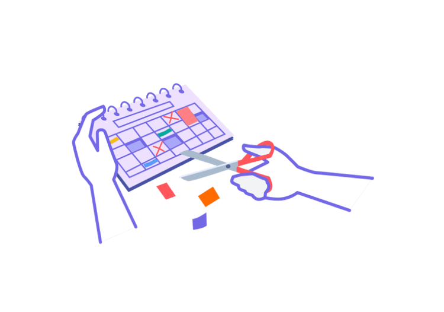
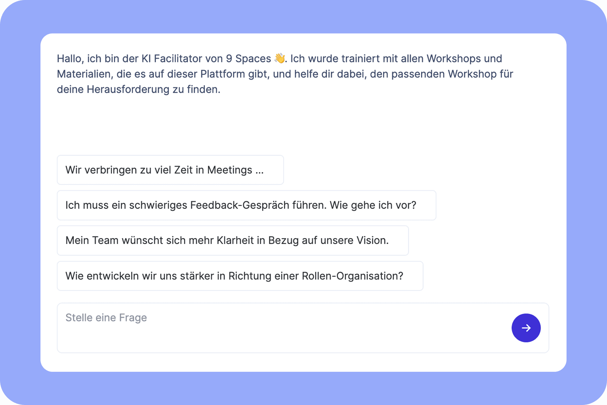

Solo
1 Zugang
299€
pro Jahr
zzgl. MwSt
Jährliche Abrechnung, jederzeit kündbar
Wir glauben: Die Teams, die ihre Art der Zusammenarbeit verändern wollen, sollten (fast immer) bei ihren Meetings anfangen.

Auf dieser Seite lernst du, wie 9 Spaces Teams dabei helfen kann, eine Meeting-Struktur zu finden, die zu ihnen passt.

Orgas, die bereits Meetings und Wandel mit 9 Spaces neu gestalten:
Laut Schätzungen verbringen Führungskräfte durchschnittlich über 20 Stunden pro Woche in Meetings– und das ohne die Zeit für Vorbereitung und Nachbereitung. Gleichzeitig bewerten Führungskräfte lediglich 17 Prozent ihrer Meetings als produktiv und sinnvoll genutzt. Das heißt im Umkehrschluss, dass sie pro Jahr etwa 900 Stunden, also mehr als 20 volle 40-Stunden-Arbeitswochen, in Meetings verbringen, die effizienter gestaltet werden könnten.
Verrückt, oder?
Meetings sind teuer. Und schlechte Meetings sind doppelt teuer. Der US-amerikanische Organisationspsychologe Steven Rogelberg, der an der University of North Carolina zu diesem Thema forscht, hat herausgefunden, dass ineffektive Meetings die Arbeitszufriedenheit senken, Mitarbeitende ermüden und das sogenannte „Meeting-Recovery-Syndrom“ hervorrufen. Dieses beschreibt den Effekt, dass sich Mitarbeitende nach einem unproduktiven oder frustrierenden Meeting erst wieder sammeln und Frust abbauen müssen.

Impact erhöhen, Strukturen verbessern und einfach gut zusammen arbeiten. Mit unseren Workshops und Methoden hast du alles, um dein Team oder deine Organisationen zu transformieren.
Den KI-Facilitator gibt’s exklusiv im Business- und Enterprise-Plan.


Viele der 4.500 Mitarbeiterinnen und Mitarbeiter von Lufthansa Technik stecken in Arbeitstagen mit Meeting-Endlosschleifen fest. Eine interne Community aus Facilitatoren soll das mithilfe von 9 Spaces ändern – und eine neue Meeting-Kultur etablieren.
✅ Eine Moderationsrolle führt durch das Meeting und es ist idealerweise nicht der Chef oder die Chefin.
✅ Ein toller Mensch schreibt das Wichtigste mit und teilt das Protokoll im Anschluss.
✅ Alle Personen im Raum wissen, warum es dieses Meeting gibt. Es hat ein klares Ziel.
✅ Es sind nur Menschen anwesend, die wirklich für das Meeting gebraucht werden.
✅ Das Meeting beginnt mit einem Check-in, in dem die Teilnehmenden teilen, wie es ihnen geht und mit welchen Gedanken sie da sind.
✅ Verständnisfragen sind jederzeit willkommen.
✅ Niemand daddelt am Smartphone oder liest nebenbei E-Mails. Volle Aufmerksamkeit aufs Meeting!
✅ Alle Personen im Meeting kommen zu Wort. Niemand wird unterbrochen.
✅ Das Meeting endet mit einem Check-out, in dem die Teilnehmenden reflektieren, wie das Meeting für sie war und was sie sich fürs nächste wünschen.
✅ Alle freuen sich, wenn To-dos für sie abfallen und verlassen das Meeting mit konkreten nächsten Schritten.
✅ Alle Teilnehmenden haben am Ende des Meetings mehr Energie und Klarheit als vorher. (Ja, das geht!)
zzgl. MwSt
Jährliche Abrechnung, jederzeit kündbar
Zugang für mehrere Mitarbeitende in einem maßgeschneiderten Plan
Alle Features und Mehrwerte auf einem Blick?